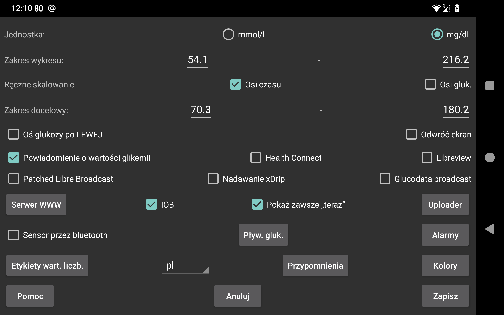

be de fr it nl pl pt ru tr uk zh en
Wybierz, czy wartości glukozy mają być podawane w mmol/L czy dm/dL.
Podczas skanowania oprócz wibracji wydawany jest również dźwięk.
Jeśli opcja jest zaznaczona, ta aplikacja będzie uruchamiana po zeskanowaniu sensora przez NFC, nawet jeśli aplikacja ta nie jest aktualnie wyświetlana na ekranie. Jeśli opcję tę ma włączonych wiele aplikacji, android wyświetli komunikat z możliwością wyboru, gdzie można wybrać aplikację, której chcesz użyć. Wybranie jednej jakoś nie działa, a wybranie jednej przy kolejnym skanowaniu też nie. Czyli w tym przypadku nie da się skanować bez aplikacji wyświetlonej bezpośrednio na ekranie. Wyłączenie jej w tej aplikacji sprawi, że przynajmniej jedna aplikacja będzie mogła być aktywowana w ten sposób.
Jeśli masz dostęp do roota, możesz też wyłączyć aktywację NFC w aplikacji Librelink firmy Abbott (nie działa z Libre3):
Zostań użytkownikiem rootem w wierszu poleceń adb lub termux, i wpisz:
pm disable com.freestylelibre.app.nl/com.librelink.app.ui.common.NFCScanActivity
Na Librelink 2.7.1 i niższych trzeba było wcisnąć:
pm disable com.freestylelibre.app.nl/com.librelink.app.ui.common.ScanSensorActivity
com.freestylelibre.app.nl tutaj to wersja holenderska Librelink, należy to zastąpić używaną wersją. Możesz znaleźć tę nazwę wpisując (nawet bez roota):
pm list package freestylelibre
Następnie nadal można używać Librelink do skanowania, gdy aplikacja ta jest wyświetlona na ekranie, ale nie zostanie ona uruchomiona w inny sposób. Librelink 2.5.2 i wyższe wersje zawieszają się, jeśli wykryją roota. Ale w Magisk można łatwo ukryć roota zmieniając nazwę Magisk i dodając poszczególne aplikacje do denylist (Magisk 24.3) lub Magiskhide (Magisk 23.0). Do denylist należy dodać również Juggluco. Z wyjątkiem sytuacji, gdy korzystasz z amerykańskich sensorów Freestyle Libre 2, możesz również używać starszej wersji Librelink bez sprawdzania roota.
Bez roota w wierszu poleceń adb można też wyłączyć całą aplikację:
pm disable-user --user 0 com.freestylelibre.app.nl
Zanim zadzwonisz do obsługi klienta Abbott, możesz ponownie włączyć ją za pomocą polecenia:
pm enable com.freestylelibre.app.nl
(Wcześniej nazywana "Stęż. glukozy w pasku stanu). Jeśli opcja będzie włączona, wartości stężenia glukozy przesyłane strumieniowo przez Bluetooth są cicho wyświetlane w powiadomieniu i na pasku stanu systemu Android. Jeśli wyłączysz tę opcję, zamiast liczby pojawi się kropka, a w powiadomieniu widoczna będzie jedynie treść "Naciśnij, by połączyć się z sensorem" lub "Naciśnij, by zacząć przesył danych". Aplikacja, która pozostaje uruchomiona w tle, jest zobowiązana przez Androida do posiadania takiego widocznego powiadomienia (w przeciwnym razie jest łatwo zatrzymywana przez Androida). Juggluco wyłącza powiadomienie tylko wtedy, gdy opcja "Sensor przez Bluetooth" jest wyłączona i nie ma żadnych połączeń w ramach klonowania.
Na niektórych smartfonach wartość stężenia glukozy jest wyświetlana na pasku stanu Androida dopiero po zmianie ustawień powiadomień Androida. Na przykład na Realme GT 5G trzeba wejść w listę aplikacji ->Juggluco->zarządzaj powiadomieniami, nacisnąć na glucoseNotification i wyłączyć „Ustaw na tryb cichy”. "Wyświetlanie w pasku stanu" będzie teraz widoczne jako włączone.
Możesz również uzyskać powiadomienie w systemie Androida, wybierając opcję Powiadom. w lewym środkowym menu. W takim przypadku powiadomienie zostanie wysłane do niektórych smartwatchów, jeśli są tak skonfigurowane. To działa z zegarkami Garmin, nie wiem czy działa z czymkolwiek innym. Alarmy również generują powiadomienia.
Po włączeniu tej opcji na ekranie stale obecny jest mały obrazek z aktualną wartością stężenia glukozy, niezależnie od tego, która aplikacja jest na pierwszym planie. Jeśli włączysz ją po raz pierwszy, zostaniesz przekierowany do listy aplikacji, w której musisz udzielić Juggluco uprawnienia do wyświetlania na wierzchu innych aplikacji.
Ustaw alarmy dla wysokiego i niskiego poziomu stężenia glukozy, alarm utraty sygnału i dla powiadomienia o ponownie dostępnej wartości glukozy.
Określ etykiety używane dla wartości liczbowych. Przejdź do ekranu, aby określić, które etykiety użyć do ustalenia wartości takich jak dawki insuliny, spożycie węglowodanów i godziny spędzone na grze w piłkę nożną. Jeśli korzystasz również z aplikacji Kerfstok na zegarek Garmin, etykiety te są wysyłane do aplikacji na zegarek.
Różne sposoby przesyłania danych z Juggluco do innych aplikacji lub serwerów. (Aby wysyłać dane do zegarków, przejdź do Lewe menu ->Zegarek).
Określ, że alarm powinien się włączyć, jeśli nie wprowadziłeś określonej ilości jedzenia lub leków w określonym czasie.
Zeskanuj matrycę danych na opakowaniach sensorów Sibionics i aplikatorach Dexcom G7/ONE+ oraz kod QR, który znajduje się w: Lewe środkowe menu→Klonowanie za pomocą skanera kodów Google. Jeśli opcja nie jest zaznaczona, używany jest zXing . Na większości urządzeń skanowanie Google działa lepiej, ale czasami nie działa. Jeśli nie powiedzie się z błędem, zXing jest zawsze używany, ale czasami skanowanie Google po prostu nie działa bez zwracania błędu.
Wszelkiego rodzaju ustawienia dotyczące sposobu wyświetlania danych, od zakresu docelowego po język.